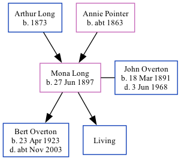

Mona Winifred Catherine Overton (née Long) 1897 -
[ Home ] | [ Calendar ] | [ Surnames Index ] | [ Family History ]The daughter of Arthur Long (a golf caddy) and Annie Pointer (a laundress), Mona Long, the second cousin twice-removed on the father's side of <a href="I1.html">Nigel Horne</a>, was born in Ash, Kent, England on Jun 27, 1897<span class="citation">1,2,3</span>, was baptized there on Sep 12, 1897 and married John Overton (a metropolitan police constable with whom she had 2 children: <a href="I3488.html">Bert Alexander</a> and <a href="I3570.html">Ivan Kenneth</a>, along with 1 surviving child) in Camberwell, London, England around May 1920<span class="citation">4</span>.</p><p>Throughout her life, Mona lived in several places: at Spinners Cottage, Worth, Kent, England on Mar 31, 1901<span class="citation">1</span>; at 41 Deft Street, Sandwich, Kent on Apr 2, 1911<span class="citation">5</span>; and at 83 Wickham Street, Bexley, Kent on Sep 29, 1939<span class="citation">2</span>.
Parents
- Arthur Watts was born in 1873
- Annie Elizabeth was born c. 1863
Children
- Bert Alexander was born on Apr 23, 1923
Citations
- 1901 England, Wales & Scotland Census - Findmypast (was age 3 and the daughter of the head of the household)
- 1939 Register - Findmypast (was the wife of the head of the household)
- England & Wales births 1837-2006 - Findmypast
- England & Wales Marriages 1837-2005 - Findmypast
- 1911 Census for England & Wales - Findmypast (was age 13 and the daughter of the head of the household)
Media
England & Wales births 1837-2006 - BMD/B/1897/3/AZ/000370/351
England Births & Baptisms 1538-1975 - R_883990368
England & Wales marriages 1837-2005 - BMD/M/1920/2/AZ/000945/084
1901 England, Wales & Scotland Census - GBC/1901/0006671483
1911 Census for England & Wales - GBC/1911/RG14/04550/0427/4
1939 Register - TNA/R39/1224/1224E/008/44
Family Tree
Generated by Ged2Site. Last updated on Jul 20, 2025